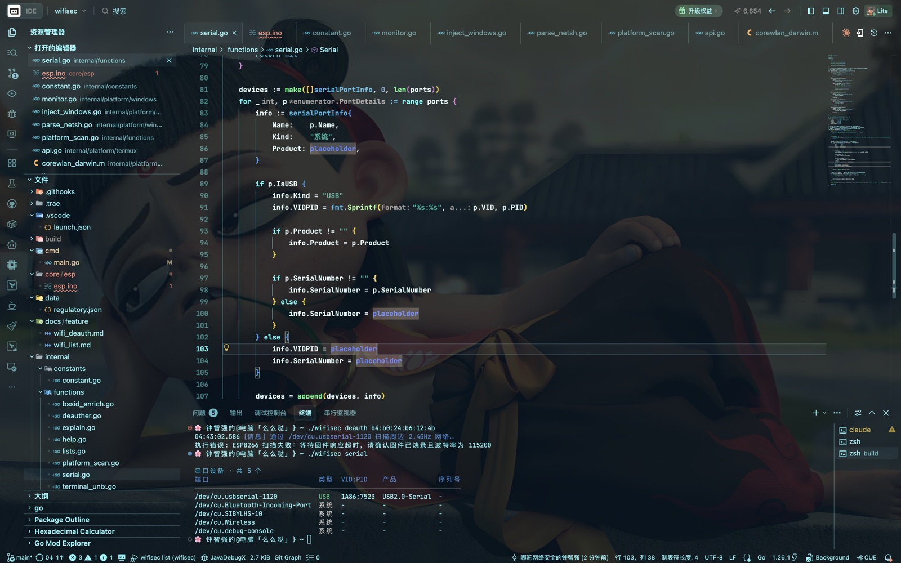
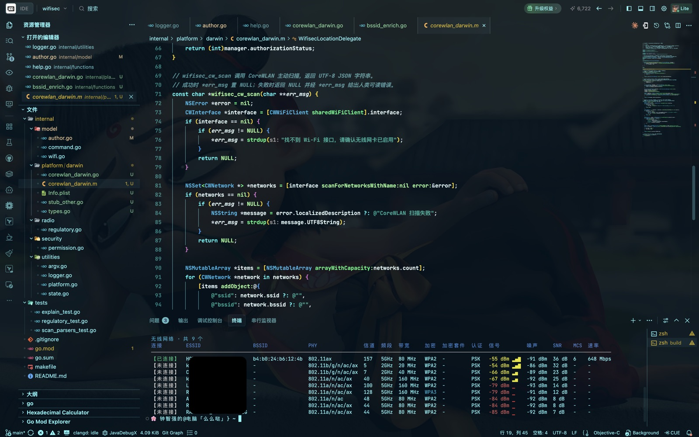

WifiSec
Go 编写的无线安全测试工具。帧注入跑在 ESP 协处理器上，宿主机零依赖、全平台免 root。
仅限自有或已获书面授权的网络使用。《中华人民共和国网络安全法》第二十七条禁止干扰他人网络正常功能；非法 deauth 干扰还可能触犯《刑法》第二百八十五条第三款、第二百八十六条。
开发实况#

wifisec serial 输出
wifisec list 输出工作方式#
两条注入路径按构建与平台自动分发，应用编排不感知底层注入方式（Hexagonal Architecture：应用层只依赖 frameWriter / channelSetter 两个端口）。
| 路径 | 原理 | 平台 | 权限 |
|---|---|---|---|
| ESP 协处理器（默认） | 帧注入在板载 ESP8266/ESP32 射频上完成，宿主机经 USB 串口下发协议帧 | macOS / Linux / Windows / Termux | 免 root |
| Linux 原生 | iw 创建 monitor 接口 + AF_PACKET 原始套接字 | Linux / Termux | root 或 CAP_NET_RAW |
| Windows 原生 | Npcap 驱动注入 + WlanHelper 切 monitor | Windows | 管理员 + Npcap |
| macOS 原生 | 不可用——Apple 未开放 802.11 帧注入 API，返回精确技术说明 | macOS | — |
快速开始#
三种安装方式，任选其一：
| 方式 | 适用 | 命令 |
|---|---|---|
| go install（推荐） | 已有 Go 环境 | go install github.com/ctkqiang/wifisec/cmd/wifisec@latest |
| GitHub Release | 无 Go 环境 | 上方「下载」区直接拿对应平台产物 |
| 源码编译 | 想改代码 | git clone … && make build |
go install 安装到 $(go env GOPATH)/bin/，首次使用记得把该目录加进 PATH。二进制名取包路径最后一段，装好即是 wifisec。- 1编译依赖 Go 1.26+，无 CGO：
make build # 产物 build/wifisec（macOS 额外产出 .app bundle 供定位授权） - 2烧录固件一块 ESP8266 开发板（NodeMCU / Wemos D1 mini）：见下方「固件烧录」。
- 3确认串口
wifisec serial # USB 设备置顶，记下端口名与 VID:PID - 4扫描与打击
wifisec list # 周边网络（主机射频视野） wifisec deauth 'MyWiFi' # 按 SSID，同名多 AP 全部命中 wifisec deauth 01:23:45:67:89:ab # 按 BSSID 精确锁定
list · 无线扫描#
枚举本机无线接口与周边网络。macOS 经 CoreWLAN + 定位服务取 BSSID（首次使用弹授权窗）；Linux 解析 iw；Windows 解析 netsh。
wifisec list输出含信道、频段、带宽、加密代际、信号/SNR 与信号条。同名 SSID 的 2.4/5GHz AP 分行展示，BSSID 各自独立。
完整字段判读见 wifi_list.md。
serial · 串口发现#
枚举系统全部串口（对标 Arduino IDE 端口列表），USB 设备置顶并给出 VID:PID——认芯片才是认板子的正确姿势：
| VID:PID | 芯片 | 常见载板 |
|---|---|---|
1A86:7523 | CH340/CH341 | NodeMCU、Wemos D1 mini 及多数国产板 |
1A86:55D4 | CH9102 | 较新的 ESP32-S3/C3 开发板 |
10C4:EA60 | CP2102 | 乐鑫官方 DevKit |
0403:6001 | FT232RL | FTDI 转接板 |
完整排错（充电线冒充数据线、brltty 抢占等）见 wifi_serial.md。
deauth · 帧注入#
对目标 AP 持续广播 802.11 deauthentication 帧，200ms 间隔（每秒 5 帧），Ctrl-C 停止并输出统计。协处理器路径下全过程日志：
22:40:33.342 [信息] 连接 /dev/cu.usbserial-XXXX，等待固件就绪…
22:40:34.161 [信息] 协处理器就绪（协议 v1 · 2.4GHz），扫描周边网络…
22:40:36.391 [信息] 扫描完成：周边 22 个网络，命中目标 1 个
22:40:36.391 [信息] 目标：<SSID>（<BSSID>）· 信道 4 · -53 dBm · deauth 帧 34 字节
22:40:36.392 [信息] 开始 deauth 攻击：… 间隔 200ms（每 3s 报一次进度，Ctrl-C 停止）
22:40:39.393 [信息] 进行中：已发送 15 帧 · 运行 3s
22:40:57.393 [信息] 进行中：已发送 105 帧 · 运行 21s
^C 22:40:58.114 [信息] 已发送 107 帧 · 目标 1 个 · 运行 21s完整说明（注入循环、信号对账、跨平台路径）见 wifi_deauth.md。
help · 用法总览#
裸跑 wifisec（无子命令）或 wifisec help 均输出开发者信息与全部子命令用法。
固件烧录#
固件源码 core/esp/esp.ino，一份源码经编译期条件分支覆盖 ESP8266 / ESP32 全系。推荐 arduino-cli：
arduino-cli compile \
--fqbn esp8266:esp8266:nodemcuv2:baud=115200,xtal=80,eesz=4M2M \
--build-path /tmp/esp-build core/esp/esp.ino
arduino-cli upload --fqbn esp8266:esp8266:nodemcuv2 \
--input-dir /tmp/esp-build -p /dev/cu.usbserial-XXXX core/esp/esp.inoCrystal is 26MHz 为准。板型选型表、手动下载模式按键、--no-stub 兜底等完整排错见 wifi_deauth.md §5.4-§5.5。
串口协议#
主机 ↔ 固件帧格式（小端，双向各一个魔数防方向错乱）：
| 方向 | 帧头 | 帧格式 |
|---|---|---|
| 主机 → ESP | 0xA5 | [A5][cmd][len_lo][len_hi][payload] |
| ESP → 主机 | 0x5A | [5A][cmd][len_lo][len_hi][payload] |
命令与回复：
| cmd | 方向 | 含义 | payload |
|---|---|---|---|
0x00 | 主机→ESP | PING 握手 | 无 |
0x00 | ESP→主机 | PONG | 协议版本(1) + 能力位图(1)，bit0 = 5GHz |
0x01 | 主机→ESP | 扫描 | 无 |
0x01 | ESP→主机 | 扫描条目 | bssid(6) + channel(1) + rssi(1) + ssidLen(1) + ssid |
0x02 | ESP→主机 | 扫描结束 | 无 |
0x02 | 主机→ESP | 注入 | 信道(1) + 802.11 帧（已剥 radiotap） |
0x04 | ESP→主机 | 错误 | 出错命令(1) + 错误码(1) |
复位时序
打开串口先拉复位：DTR 置低（GPIO0 高）→ RTS 置高（EN 低）100ms → 释放。NodeMCU 自动复位电路把 DTR 接到 GPIO0，驱动默认电平会把芯片锁进 ROM 下载模式（115200 完全静默）。
噪声重同步
ESP 上电以 74880 输出启动日志，在 115200 下是随机字节。解析器逐字节丢弃直至帧头 0x5A，残缺帧保留待下一段拼齐。
设计取舍全表见 wifi_deauth.md §5.3。
排错手册#
高频错误速查（完整版见 wifi_deauth.md §5.5 与 wifi_serial.md §6）：
| 报错 | 原因 | 处理 |
|---|---|---|
| 未发现 USB 串口设备 | 充电线冒充数据线 / 驱动未装 | 换数据线；装 CH340/CP2102 驱动 |
| 端口正被 X (PID N) 占用 | Arduino 串口监视器等持有端口 | 关闭报错点名的进程 |
| 串口有数据但不是有效 PONG | 板型晶振选错（115200 偏成 74880）或固件未烧录 | 选对板型重烧；74880 下能看到 PONG 即确诊 |
| 串口完全无数据 | 供电不足 / 锁下载模式 / 端口选错 | 直连 USB；确认 LED 心跳 |
| 未找到目标；仅支持 2.4GHz | 目标是 5/6GHz BSSID | 换 2.4GHz BSSID 或 ESP32-C5 |
| 擦写阶段 Timed out waiting for packet content | stub 高速擦写丢包 | --no-stub ROM 直写（文档 §5.5 有完整命令） |
安全与合规#
能力边界（重构过程中刻意保持，不自动增加攻击面）：
- 仅 deauth 一种帧类型，帧构造收敛在
internal/ieee80211纯字节编解码层； - 不加入新的 packet type、credential collection、persistence 或 exploit 能力；
- 固件 payload 上限 512 字节，超长直接拒绝，防缓冲区溢出；
- 运行
list时不要加 sudo——root 在 GUI 会话之外弹不出定位授权窗。